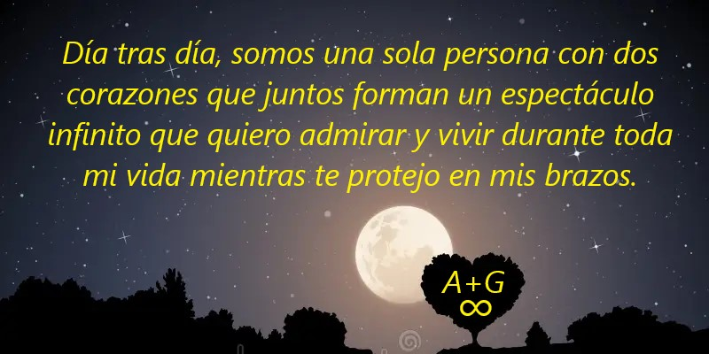

Felices 3 años y 11 meses juntos mi preciosa Andrea! Eres la persona más extraordinaria y única de mi vida. Cada día sabes cómo sacarme de la cama con una fuerza infinita que sale de lo más profundo de mi corazón con cada latido causado por tu precioso e infinito amor y tu dulce sonrisa que me conmueve y me deja sin aliento cada mañana al abrir los ojos. Quiero darte las gracias por existir aquí a mi lado, amor de mi vida, y por todo lo precioso que haces por mí, y por cómo con cada precioso gesto tuyo me haces sentir bien y llenas mi corazón de felicidad y coraje para enfrentar juntos con fuerza cada obstáculo que la vida nos lanza, enseñándome cosas nuevas cada día y descubriendo todo lo que la vida juntos tiene para ofrecer. Quiero darte las gracias por cada beso único y precioso tuyo que acaricia mis labios, más dulce que el chocolate, mis labios siguen a los tuyos porque quiero infinitos a cada momento porque cada día son más importantes y preciados que todo el oxígeno que respiro. Quiero agradecerte por cada uno de tus preciosos abrazos que me envuelven en el universo infinito de tus brazos que me envuelven como a un niño y con tu dulzura solo tú sabes hacerme cerrar los ojos relajándome con tu dulce voz que susurra dulces palabras de amor que junto con el latido de tu precioso corazón crean la música perfecta que me hace relajar y acerca mis brazos hacia ti, abrazándote fuerte para protegerte cada día, a salvo de todo mal y donde encuentro tu dulce alma esperándome que unida a la mía se transforma en una sola persona capaz de enfrentar y conquistar cada reto mientras tu dulce corazón se sincroniza con el mío desatando una fuerza infinita de nuestro amor juntos que se amplifica, fortaleciendo nuestro preciado vínculo cada día y haciendo que cada momento sea único y extraordinario juntos permitiéndonos superar cada reto que la vida nos lanza cada día y fuertes como un tren que avanza a toda velocidad logramos superarlo dando todo sin detenernos nunca. Gracias de corazón por estar a mi lado en cada momento y creer en mí, el amor de mi vida, enseñándome cada día a luchar sin rendirme jamás. Sigo tu ejemplo a cada momento, el amor de mi vida, admirando la preciosa fuerza que nace de tu precioso corazón que nunca te detiene, haciéndote afrontar cada reto con la máxima energía. Me encanta estar aquí para apoyarte con todo mi amor. Estaré cada instante de mi vida animándote y extendiéndote la mano, acompañándote hasta la meta. Recuerda cada día no detenerte nunca porque cada día eres el número uno en el universo entero y todo lo que haces es único, porque siempre lo das todo, logrando completar cada cosa, incluso la más pequeña, y haciéndolo único. Me encanta entonces celebrar juntos intensamente como hoy, cada meta que hemos logrado, viviéndola intensamente al máximo de nuestras emociones, viviendo cada momento de una manera inolvidable juntos, y protegiendo cada recuerdo y nuestro preciado vínculo en lo profundo de nuestros corazones donde cada día crece hasta explotar con amor infinito y eterno por toda nuestra preciosa Vida juntos y más allá! Es exactamente un mes para nuestro preciado día, y estoy lleno de felicidad, mi corazón late mil veces de emoción por haber llegado a estos cuatro años juntos. Estoy orgulloso de estar aquí juntos, a tu lado, el amor de mi vida. Solo tengo que cerrar los ojos para ver, en mi caja de recuerdos, cada momento que vivimos y compartimos juntos. Te amo inmensamente desde el fondo de mi corazón, que late solo y exclusivamente para ti, dando la bienvenida a tu preciosa y dulce alma, dándote todo mi preciado amor como doy la bienvenida a tu preciosa alma para protegerla cada día de todo daño. Te amo infinitamente desde lo más profundo de mi mente, donde cada día eres el sueño más hermoso y único que quiero tener para toda mi vida y más allá, y el sueño precioso que acompaña mi vida sin volver a abrir los ojos, viviendo cada día juntos de una manera única e increíble. Te amo infinitamente, tú que cada día eres más importante que el oxígeno que respiro, eres el corazón que late dentro de mí cada día y me da vida, eres mi ángel precioso, el más sabio y único de todo el cielo, eres mi estrella preciosa, la más hermosa y brillante del universo que guía mi alma por el camino correcto, la que está en el fondo de tu corazón donde nunca me pierdo y donde me siento seguro cada día, lejos de todo mal, eres mi pingüino precioso y único que quiero amar para toda mi vida y más allá, eres mi preciosa y extraordinaria esposa, la número uno en todo el universo, ¡mi todo! Que Dios te bendiga siempre, amor de mi vida, junto con nuestra increíble y extraordinaria reacción. ¡Felices 3 años y 11 meses juntos, amor de mi vida! A+G+GIOAN=¡Familia hoy, siempre y más allá!!